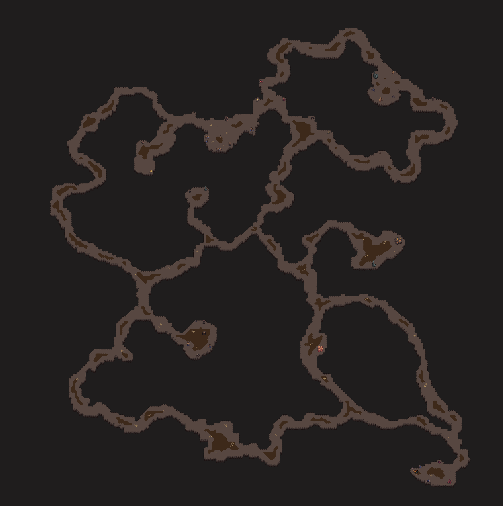

Mapas e Regiões de Grind Hero
O mundo de Grind Hero é vasto e repleto de locais para explorar. Esta página detalha os diferentes mapas, regiões e dungeons que você encontrará durante suas aventuras. Cada área possui seus próprios desafios, inimigos, recursos e segredos para descobrir.
Ilha Rukora
O jogador iniciará sua jornada na ilha Rukora, especificamente na Vila Elfhein, esta vila era reino dos grandes elfos enquanto eles ainda viviam entre os humanos antes de partirem para sua última grande jornada.
Mapa inicial da Ilha Rukora.

Mapa da Vila Elfhein.
Hoje a vila serve como abrigo e base para os novos recrutas que estão em treinamento.

Características Principais
- Clima: Temperado, com florestas densas, pequenas planícies e regiões costeiras
- Nível Recomendado: 1-20
- Zonas de Proteção: Sim, principalmente em Vila Elfhein
Vila Elfhein
O ponto central da ilha é um antigo vilarejo élfico, onde os jogadores iniciam sua aventura. No passado, esse lugar foi o coração do reino dos grandes elfos, que dominaram a ilha por séculos antes de partirem em sua última e misteriosa jornada. Hoje, as construções antigas ainda guardam vestígios de magia, e o vilarejo foi transformado em abrigo e base de treinamento para os novos recrutas que chegam à ilha em busca de glória e conhecimento.
Recursos: NPCs comerciantes, banco, quests iniciais, área segura de Protection Zone
Rat Cave (Caverna dos Ratos)
Esta caverna gigante é a primeira área de exploração subterrânea que os jogadores encontram. Ideal para aventureiros iniciantes, a Rat Cave oferece uma excelente introdução às mecânicas de exploração de dungeons do jogo.
Mapa em desenvolvimento.
Características Principais
- Tipo: Dungeon subterrânea
- Nível Recomendado: 1-10
- Níveis: Múltiplos andares com crescente dificuldade
- Zonas de Proteção: Não
Primeiro Andar
O andar mais acessível da Rat Cave é um labirinto úmido e mal iluminado, habitado por ratos de diferentes tamanhos e outros pequenos monstros das profundezas. Outrora parte de um antigo sistema de escoamento abandonado, o local agora serve como campo de prova para aventureiros iniciantes. Baús enferrujados e escondidos entre os escombros guardam itens básicos, ideais para quem está dando os primeiros passos em sua jornada.
Inimigos comuns: Ratos pequenos, ratos grandes, insetos cavernícolas
Recursos: Couro de rato, dentes de rato, cristais pequenos, itens básicos em baús
Nota: O mundo de Grind Hero está em constante expansão. Novas áreas, cavernas, dungeons e regiões serão adicionadas regularmente. Volte a esta página para descobrir os novos territórios à medida que forem lançados!
Esta página foi útil?